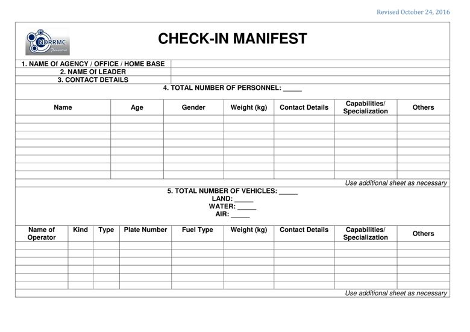
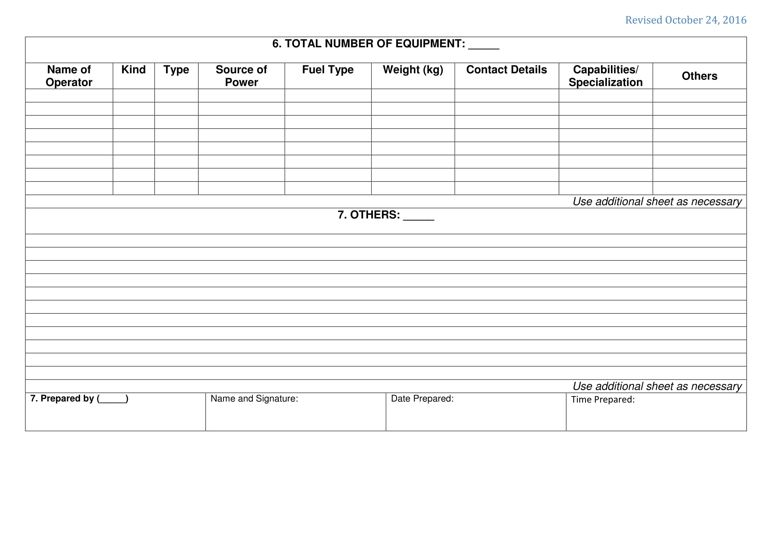

PURPOSE: The Check-in Manifest is used to obtain the breakdown of resources checked-in as indicated in ICS 211..
PREPARATION: The Check-in Manifest is accomplished by the head or authorized representative of the agency or office that will check-in to the incident / event.
DISTRIBUTION: The Check-in Manifest is submitted along with the ICS 211. The Resources Unit maintains a master list of all equipment and personnel that have reported to the incident / event.


BLOCK NO. |
BLOCK TITLE |
INSTRUCTIONS |
| 1 | Name of Agency/ Office/ Home Base | Enter the name of agency, office or home base of the resource. |
| 2 | Name of Leader | Enter the leader / authorized representative of the resource. |
| 3 | Contact Details | Enter the contact details of the leader, to include land line number, mobile number and/or email address. |
| 4 | Total Number of Personnel | Enter the total number of personnel as part of the resource. Afterwards, provide breakdown of the personnel by filling up the appropriate blocks. |
| 5 | Total Number of Vehicles | Enter the total number of vehicles as part of the resource. Afterwards, provide breakdown of the vehicles by filling up the appropriate blocks. |
| 6 | Total Number of Major Equipment | Enter the total number of equipment as part of the resource. Afterwards, provide breakdown of the major equipment by filling up the appropriate blocks. |
| 7 | Others | Enter the total number of other resource other than personnel, vehicles and major equipment. Afterwards, provide the appropriate breakdown. |
| 8 | Prepared by (___) | Enter complete name and signature of the person who prepared the specific page of the form, date (mm-dd-yyyy), and time (24 hour format) the form was prepared and completed. Note: Indicate the position in the (_____). |